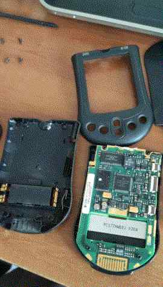
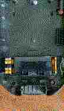
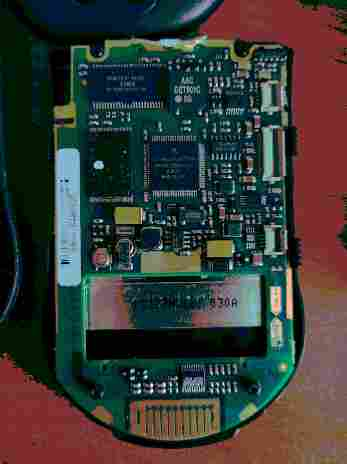
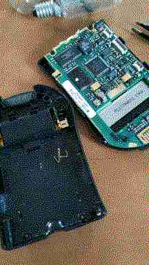
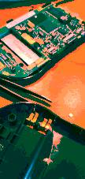
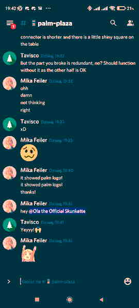

And then I mentioned having a
never-working-since-purchase m100 that I got from my partner.
And then I mentioned having a
never-working-since-purchase m100 that I got from my partner.April 14, 2022
the below mirrors https://g.mikf.pl/gemlog/2022-04-14-m100.gmi
gemini://g.mikf.pl/gemlog/2022-04-14-m100.gmi
Yesterday I joined the PalmDB Discord server. I
found it via the PalmDB website:
https://palmdb.net
I first saw there the Community Highlights side
pane that shows excerpts from the Discord server. It has a link to
Discord on the bottom, but it's a channel link and not an invite
so for someone who hasn't yet gotten an invite, it leads to an
error. The invite can be found in the Community dropdown of the
top navigation bar, though. Also you can join with my link (the
admins will see that it's via me):
https://discord.gg/a86Bkkb92b
I immediately went to the #palm-plaza channel and
saw a friend and some people I followed on Twitter, and promptly
put forward greetings and an introduction. The introduction
mentioned my gemlog, and nkorth caught on that with
thoughts of making Plucker support Gemini, themselves. Then I
brought on the topic of my broken Palm Portable Keyboard (details
in previous gemlog post). Guybrush responded, saying
they had a new in box Palm Universal Keyboard with the same issue
(and some sort of short that ran the Palm battery down very fast
when connected), and that it's basically impossible to fix since
it's a flexible PCB. Tavisco then advised me to buy the IrDA
wireless ones since it seems more readily available having had
been released later. And some words later I learned I could have
installed Graffiti 1 on Graffiti 2 devices.
And then I mentioned having a
never-working-since-purchase m100 that I got from my partner.
What problem it has? By any chance it its that you insert the batteries and nothing happens?
That's a very common issue on M100 and easily fixable
The battery terminals are pressure contacted on the mother board
So, you need to open it up, and stretch the contacts a little to make them make a better contact
Here <image>
Bought a M100 that had this issue too, and worked like a charm (aside screen issues) after :P
Within three minutes I had myself finding the m100 and opening it
up.
The four screws were hard to recognize for a moment, some looked
like astrisk, some like imbus, some like plus/philips. But they
all ended up going perfectly under a No.5 asterisk screwdriver.
(click here to see the first photo as a dithered GIF, 32KB)
The connectors on the board turned out to be quite damaged (corroded or scratched too badly in their default middle touch position, a "bad spot" as Tavisco said) and the bendable connectors were quite flattened indeed.
The photo below in the link-colored border is a link to a larger (130KB) version of that board photo.
But after fiddling with the
connectors, bending and stretching them, pulling them off (when
loosened) and bending them to tighten them, repeatedly squashing
the thing together and putting batteries in and reaching failure,
at one point one broke when I got frustrated and had my moves too
uncareful and forceful. Fortunately, dum me with help of Tavisco
realized that it was actually just one redundant half of a
connector.
In the image on the right you can see the tiny bright square that
I broke off with the pliers.
After seven more minutes of fiddling, I exclaimed in chat: 
it showed palm logo!
it showed palm logo!
thanks!
I then squished the handheld back together, with the bent
connectors springing it outward against me, and then screwed it
back, with the screw next to the connectors ending up messed up
from screwing it too far (indefinitely, which is undesired to be
possible).
{kind=link}